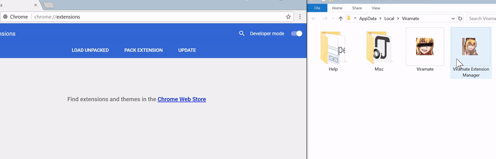

How to finish installing Viramate

Visit
chrome://extensions
in your Chrome browser.
Drag and drop the
Viramate
and
Viramate Extension Manager
icons from the
directory into the Chrome Extensions tab, one at a time.